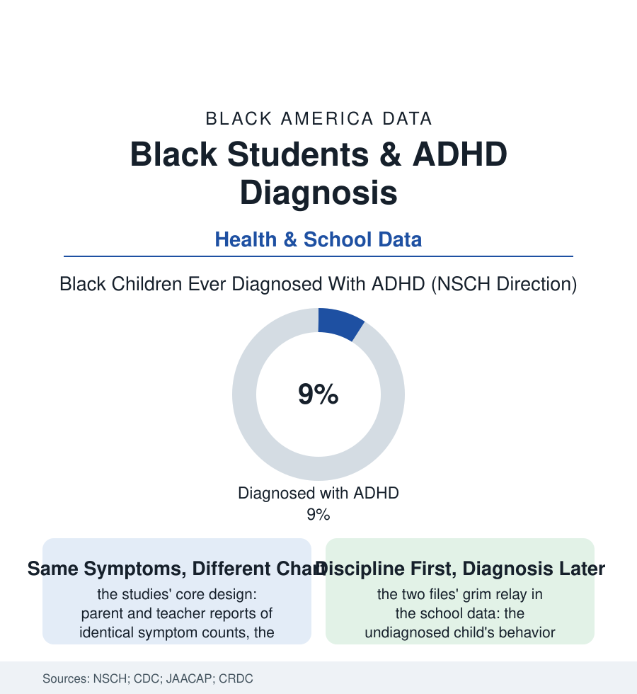

Black Education
The Unquiet Mind: ADHD and the Diagnosis That Arrives Late
The symptoms are reported at the same rates; the diagnosis is not. Black children with ADHD are found later, medicated less, and disciplined more for the same neurology. The ADHD file.

The ADHD literature contains a natural experiment that will not go away: measure the symptoms directly — the parent checklists, the teacher ratings — and Black children show them at rates equal to or above their peers. Then count the diagnoses and the prescriptions, and the same children fall below. The neurology is evenly distributed. The naming of it is not. This article reads the ADHD file.
The Gap Between Symptom and Chart
The research designs converge across decades: the symptom inventories (the standardized instruments scored blind to the hypothesis) returning parity or Black elevation; the clinical and administrative records returning Black underdiagnosis, later age at first diagnosis, and — among the diagnosed — the treatment data's consistent rows (lower medication rates, lower continuity of medication, behavioral therapy's referrals unfilled at the same ratios as every other file's), the whole pattern surviving adjustment for income and insurance in the strongest studies, which locates the gap in the encounter itself: the pediatrician's threshold, the teacher's referral decision, the parent's advocacy resources and the parent's warranted caution (the Black family's documented ambivalence toward the label and the medication — the community's own discourse weighing the diagnosis as both key and stigma, the historical record of the school system's labels giving the caution its evidence — meeting a system whose rushed appointments rarely fund the trust conversation the decision deserves). The school's side of the ledger is where the file turns consequential: the undiagnosed child's identical neurology arriving in the classroom as conduct — the discipline file's referrals, the defiance codes, the suspension counts — the two systems, health and discipline, racing to name the same behavior, with the discipline system's name arriving first in the data for the Black child and carrying the heavier consequences. The 504 plans and IEPs that the diagnosis unlocks (the extra time, the structured setting, the behavior plan with its supports rather than its punishments) distribute accordingly: the accommodation economy's benefits flowing, in the CRDC cross-tabs, toward the diagnosed, which is to say away from the rows of this file.
The Correction's Slow Arrival
The girls of the file deserve their sentence in it: the inattentive presentation — the daydreaming girl, quiet in the back — under-found in every population and latest in this one, her diagnosis arriving, in the clinical series, in adolescence or adulthood, after the school file has already written its version of her. The screening instruments catch the loud neurology first. The quiet child's file is the file's own, smaller silence.
The recent data show the gap narrowing in pieces, and the file records the pieces precisely: the diagnosis rates in the newest national surveys converging as awareness and screening spread — the convergence carrying its own audit question (the field's recurring debate over relative over- and under-diagnosis resolving, in the best analyses, toward the answer the symptom data always gave: the historical truth was under-finding in this population, and convergence is correction, not epidemic), the school-based health centers and the integrated pediatric practices of the health file posting the diagnosis-and-treatment rows the fragmented system misses, the Black developmental specialists and the advocacy organizations working the parent-education rows — the community's conversation shifting, in the podcast and pulpit data of the culture file, from suspicion of the label toward strategy for wielding it. The stakes compound in the longitudinal file like interest: the untreated ADHD rows of the outcome studies — the graduation, the earnings, the driving record, the substance file's elevated entries — against the treated rows' partial normalization, the diagnosis standing as one of the cheapest fate-changers in the whole education section: a name, a plan, a medication decision made deliberately rather than by default. The file's closing datum is the natural experiment's, and it deserves the last word of the section it indicts: when the symptoms are counted by instrument instead of by impression, the children are the same. Only the charts differ — and charts, unlike neurology, are entirely within the system's power to correct.
Reading the ADHD Data
The ADHD file is the education section's mirror held to its own adults: the behavior was never the variable. The NSCH publishes the diagnoses; the symptom checklists publish the truth beside them. Between the two columns stands every professional the child met on the way to a name — and the file's question, which is theirs to answer.
More in Black Education
Black Educational Attainment: High School Parity, the College Gap
About 89 percent of Black adults hold a high school diploma and one in four holds a bachelor's degree or higher — the attainment ladder, the college completion gap, and the generational trend.
Historically Black Colleges and Universities: Enrollment and Degrees
More than 100 HBCUs enroll roughly 290,000 students and award about one in six Black bachelor's degrees — an outsized share from a small sector. The federal education data.
Black College Enrollment: 2.4 Million Students
About 2.4 million Black students are enrolled in American colleges — nearly two-thirds of them women. The NCES enrollment data by sector, level, and trend.
Source: National Survey of Children's Health; CDC ADHD data; Journal of the American Academy of Child & Adolescent Psychiatry research; U.S. Department of Education Civil Rights Data Collection.